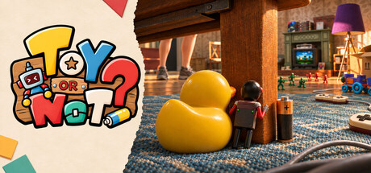
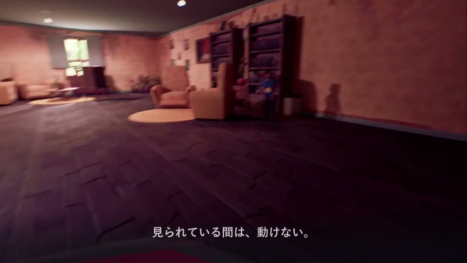

Toy or Not ?
UE5.8C++3人チーム
凝視されたら動けない。人間とおもちゃに分かれて遊ぶ非対称オンライン対戦。
捕まったあとも仲間と試合を見て盛り上がれるように、おもちゃ箱の中に観戦テレビを作りました。
Steamストア公開中 ↗ ／ 2027年2月発売予定
GAME PROGRAMMER PORTFOLIO
▶ PRESS ANY KEY / TAP TO START
丸山 大輔 ／ 28卒 ゲームプログラマー
つらい時期、ゲームが心の拠り所でした。友達と笑い合えて、あとで振り返ったときに「あの頃がよかった」と思えるゲームを、今度は自分が作ります。
UE5・C++で、3人チームの『Toy or Not ?』を開発中です（Steamで2027年2月発売予定）。モバイルゲーム開発企業でもアルバイトとして開発しています。


凝視されたら動けない。人間とおもちゃに分かれて遊ぶ非対称オンライン対戦。
捕まったあとも仲間と試合を見て盛り上がれるように、おもちゃ箱の中に観戦テレビを作りました。
Steamストア公開中 ↗ ／ 2027年2月発売予定
 個人制作
UnityRoomで遊ぶ ↗
個人制作
UnityRoomで遊ぶ ↗
 UnityRoomで遊ぶ ↗
UnityRoomで遊ぶ ↗
Unity・C#で制作を始めました。
『はっきよいよい つっぱって！』
3人チームで制作。
『ZeroOneSlash』
Unity1week・TeamB
運営中タイトルの改修、新規事業でTikTok向けゲームの企画・開発・収益目標設定を担当。
『座れ！サラリーマン！』
ゲーム設計ワークに参加。
実タイトルのバグ修正・機能追加を経験。
アニメーションとシェーダーの基礎を学習。
3人チームで、UE5・C++を使って開発。
『Toy or Not ?』はハラハラを友達と分け合うために、『座れ！サラリーマン！』は日常の憂鬱を笑いに変えるために作りました。
インゲームとアウトゲームのつなぎ目にこだわっています。ペルソナの総攻撃やシーン遷移のように、切り替わる瞬間にも心が動く演出を作りたいです。
『Toy or Not ?』では寸劇の最後のコマにタイトルを重ね、飛ばしてもそのコマで止まるようにしました。これまでにキーコンフィグやオプション画面も実装し、命中の手応えにはヒットストップ・カメラシェイク・Bloomを使っています。
自分から声をかけて『Toy or Not ?』のチームを立ち上げ、3人でSteamストア公開まで進めました。コードを理解してから共有できるよう、チームに /quiz を導入しました。
寸劇の吹き出しは「見づらい」という声で字幕に変更。タイトルで光を当てると固まる演出も、遊ぶとバグに見えたため、クリックするとおもちゃが踊る形に作り直しました。
寸劇とタイトルの実装を見る →次に深めたいのは、画面遷移中の読み込みです。待ち時間も演出に使い、自然に次の画面へつなげたいです。
あわせて、カメラ・音・アニメーションにも取り組んでいます。固まったおもちゃが、バグで止まったように見えるか、息を潜めているように見えるか。その差を作り分けられるようになりたいです。
『ペルソナ5 ザ・ロイヤル』『ゼルダの伝説 ブレス オブ ザ ワイルド』『原神』。ライブに行くことも好きです。
Contact
作品や開発について、面接・インターン・制作のお話をお待ちしています。